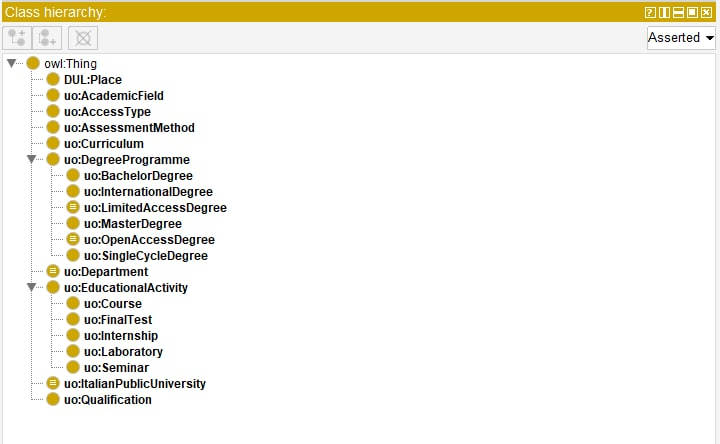

UniOn is an ontology representing Universities educational offer. It includes information to describe academic fields, degree programs, access methods and requirements, educational activities, titles and qualifications, location, organization and more.
If you have any questions that are beyond the scope of this help file, Please feel free to email alice.bordignon@studio.unibo.it, francesca.borriello@studio.unibo.it, lorenza.pierucci@studio.unibo.it.
1.2 Goal
UniOn is intended to represent and organize information in order to:
Orient oneself by getting an overview of university educational programs.
Compare different universities’ offers.
Extract useful information about a variety of issues.
It could thus prove useful for prospective students looking for the most suitable university course as well as for universities or other related institutions willing to describe and publish information about their training offer.
1.3 Competency questions
In order to better understand what UniOn should be able to represent and what a user should be able to extract from it, we designed some natural language competency questions.
Which degree programs are delivered by the University of Bologna in the Humanities field?
Which University offers a degree in Philosophy?
What is the access modality for the master’s degree in Semiotics?
What is the study plan of the Law degree program at the University La Sapienza?
How many CFUs in M-STO/01 does the University of Venice History Degree Program provide?
Which department manages the Digital Humanities Master Degree at the University of Pisa?
How many laboratories does the University of Bologna Chemistry degree program entail?
Which laboratories does the University of Bologna Chemistry degree program entail?
Which degree programs belonging to the class L-13 – Biology does the University of Naples offer?
Where are the Conservation and Restoration of Cultural Heritage degree program courses held?
Which international master’s degree programs are offered by the University of Milan?
The CQs will later be of use in the assessment phase of the ontology development process through SPARQL queries adapted to our available data.
2. Building the Ontology
2.1 Sources
In order to build our vocabulary, we made use of the following sources:
Universities websites, specifically webpages providing information about the training offer;
Open datasets (mainly CSV format) containing related information;
2.2 A hybrid approach
Since we intended our vocabulary to organically include information from both kinds of sources, we adopted a hybrid approach, merging top-down and bottom-up techniques:
Top-down: we defined general concepts of the domain and then classified them into specific hierarchies by analyzing relevant information sources, i.e. university websites.
Bottom-up: starting with existing data structures, we defined specific concrete concepts.
Integrating these two approaches gave us the opportunity to effectively balance theoretical appropriateness and feasibility (concretely applying the vocabulary to existing data).
The process was, of course, an iterative one: it required a continuous comparison between our sources and a progressive adaptation of both.
2.3 Completeness, feasibility and interoperability
Since the availability and completeness of data for our domain is limited and since we did not intend our ontology to be flattened on them, we worked towards a balance between logical complexity, completeness and applicability. This means that UniOn covers more than the existing data structures and contains some “empty” concepts without any data that represents them: we hope that soon UniOn will be able to embrace more comprehensive data.
Finally, in order to guarantee interoperability and reusability to UniOn, we decided to make use - when possible - of existing vocabularies, mapping our classes and properties with widely adopted ones. We thus reused some classes and properties from DULCE (DOLCE+DnS Ultralite), a foundational ontology presenting general categories and relations that come to hand when building a lower-level ontology like ours.

UniOn classes
3. Data collection
As we said, in the process of modelling our ontology we worked on a few open CSV files. Once we completed the first draft of our model, we moved on to create our own dataset to merge and integrate all information – which was then scattered among several sources – into a new, all-inclusive structure.
The goal was to then use the obtained dataset to automatically populate our ontology: this would allow us to put it to the test by trying to answer our competency questions.
3.1 The Opendata Beta project by University of Bologna
Our starting point were three datasets (CSV format) made publicly available by the University of Bologna as part of the Opendata Beta project.
Since complete data was only available for the academic year 2018/2019, we restricted our analysis to this period. Also, we decided to focus on one specific academic field, the Humanities.
The three files respectively contain:
A catalogue of all degree programs offered by the University of Bologna; for each of them, the following information is specified: webpage URL, administrative location and teaching place(s), reference academic field, degree type (bachelor’s/master’s ...), duration, whether it is international or not, released qualification, teaching language and type of access.
A catalogue of all educational activities delivered by the University of Bologna. For each educational activity, a ‘degree code’ specifies the degree program it belongs to.
Specification of each educational activity's SSD, Teaching code and CFUs.
SSD stands for ‘scientific-disciplinary sectors’: they point to the disciplinary areas to which each educational activity belongs.
Teaching codes are numerical codes univocally identifying each educational activity.
CFUs (university formative credits) are a numerical measure of the workload for each exam or activity. To obtain a degree, students need to acquire 180 CFUs.
3.2 Data integration
Since some data was missing from our starting datasets, we needed to semi-automatically integrate the following information:
The degree class: a unique code of each degree program;
The department: the administrative structure managing each degree program;
The different types of educational activity: exams, seminars, laboratories, internships and final tests.
3.3 The final dataset
Once all information had been collected, we merged and integrated it into our final dataset. To do so, we relied on Pandas, a data analysis and manipulation tool which allowed us to select, align and merge information from the three CSV files.
You can check our code out on our jupyter notebook here
As a result, we obtained a data frame including:
All degree programmes offered by the University of in the Humanities area for the year 2018/2019 and related information (type, access mode, location, duration, qualification etc.).
For each degree programme, all related educational activities and their identification codes and CFUs
4. Populating the ontology (A-box)
We populated our ontology using OwlReady2, a package for ontology-oriented programming in Python. It can load OWL 2.0 ontologies as Python objects, modify them, save them, and perform reasoning via HermiT.
To populate our classes we created the individuals, their labels, and established relationships among them. Throughout the various steps of this phase, we performed an iterative testing process in order to detect errors and consequently adjust our script to build an efficient population environment.
The resulting population script is potentially reusable by anyone having a CSV dataset(s) structured like ours and carrying information for any other Universities, academic years, academic fields etc.
Once all the individuals and all the relationships among them were correctly created, we ran the Protégé logic reasoner on the populated ontology to check its consistency and integrity. Since it inferred correctly what had not been declared manually, we concluded that our ontology was logically structured and working.
See our Jupyter notebook for a full explanation of the ontology population steps.
As we have already outlined, UniOn has been modelled pursuing a balance between the completeness of the domain’s description and the actual availability of data. This means that, for it not to be flattened on the (still defective) data, it entails more classes and properties than those that those described by our dataset. Therefore, not all its classes are populated by individuals.
5. SPARQL API
For testing our ontology through SPARQL queries we need an application programming interface (API). An API is an interface, or method/way, for two pieces of software to communicate.
5.1 The virtual environment
We decided that the best starting point to do it was to create a virtual environment using python. Firstly, we created a new local folder to receive the creation and activation of our virtual environment done by prompt commands using the venv module. The venv module provides support for creating lightweight “virtual environments” with their own site directories, optionally isolated from system site directories.
5.2 FLASK: creating the API
Once our virtual environment was activated, we installed all the packages and frameworks needed (Flask and Owlready2). Flask is a widely used micro web framework for creating APIs in Python. Then, we created and added a python script to the folder, that once run creates a local port to send and receive requests, loading our ontology in JSON format, and requiring to return results as a legible list of strings.
5.3 PostMan: using the API
To send requests to the local port and verify the functioning of the API we used PostMan, an API platform for building and using APIs. The script that uses flask and create the local port is available on our GitHub repository.
We verified the working API through a simple GET request, and then we switched to POST to start querying through SPARQL within the PostMan interface, adding the /free_query at the end of our local host.
5.2 Testing: SPARQL queries
Since our data sample for testing our ontology is limited to the University of Bologna’s educational offer for humanities degree programs, we adapted the SPARQL queries to our available data starting from the original CQ.
PREFIX rdf: <http://www.w3.org/1999/02/22-rdf-syntax-ns#>
PREFIX owl: <http://www.w3.org/2002/07/owl#>
PREFIX rdfs: <http://www.w3.org/2000/01/rdf-schema#>
PREFIX uo: <http://purl.org/ontology/UniOn#>
SELECT ?DegreeProgrammeLabel (COUNT(?DegreeProgrammeLabel) as ?DegreeCount)
WHERE {
?DegreeProgramme uo:isDeliveredBy ?ItalianUniversity ;
uo:hasAcademicField ?AcademicField .
?ItalianUniversity rdfs:label "University of Bologna" .
?AcademicField rdfs:label "Studi umanistici" .
OPTIONAL { ?DegreeProgramme rdfs:label ?DegreeProgrammeLabel}
}
GROUP BY ?DegreeProgrammeLabel
ORDER BY DESC(?DegreeCount)
"response": "[['Filosofia', 2], ['Storia', 1], ['Semiotica', 1], ['Scienze storiche e orientalistiche', 1], ['Scienze filosofiche', 1], ['Scienze della comunicazione', 1], ['Scienze del libro e del documento', 1], ['Lettere', 1], ['Italianistica, culture letterarie europee, scienze linguistiche', 1], ['Geografia e processi territoriali', 1], ['Filologia, letteratura e tradizione classica', 1], ['Fashion culture and management', 1], ['Discipline della musica e del teatro', 1], ['Digital humanities and digital knowledge', 1], ['Dams - discipline delle arti, della musica e dello spettacolo', 1], ['Culture e tecniche della moda', 1], ['Conservazione e restauro dei beni culturali (abilitante ai sensi del d. lgs n. 42', 1], ['Cinema, televisione e produzione multimediale', 1], ['Beni culturali', 1], ['Beni archeologici, artistici e del paesaggio: storia, tutela e valorizzazione', 1], ['Arti visive', 1], ['Archeologia e culture del mondo antico', 1], [\"Antropologia, religioni, civilta' orientali\", 1], ['Antropologia culturale ed etnologia', 1]]"
"response": "[['ANTROPOLOGIA CULTURALE (1)'], ['ANTROPOLOGIA SOCIALE (1)'], ['ARCHEOLOGIA DEL PAESAGGIO (1)'], [\"ARCHEOLOGIA E STORIA DELL'ARTE DEL MEDIOEVO (1)\"], [\"ARCHEOLOGIA E STORIA DELL'ARTE GRECA (1)\"], [\"ARCHEOLOGIA E STORIA DELL'ARTE ROMANA (1)\"], ['ARCHEOLOGIA TARDOANTICA (1)'], ['ARCHIVISTICA (1)'], ['CULTURA E LINGUA ARMENA (1)'], ['DIDATTICA DELLA STORIA (1)'], ['EPIGRAFIA E ISTITUZIONI GRECHE'], ['EPIGRAFIA E ISTITUZIONI ROMANE'], ['EPIGRAFIA GRECA (1)'], ['EPIGRAFIA ROMANA (1)'], ['ESEGESI DELLE FONTI STORICHE MEDIEVALI (1)'], ['ESTETICA'], ['FILOSOFIA DELLA SCIENZA'], ['FILOSOFIA MORALE'], ['FILOSOFIA TEORETICA'], ['GEOGRAFIA (1)'], ['INFORMATICA DI BASE'], [\"INTRODUZIONE ALL'ETRUSCOLOGIA (1)\"], ['ISTITUZIONI E ANTICHITÀ MEDIEVALI (1)'], ['ISTITUZIONI GRECHE (1)'], ['ISTITUZIONI ROMANE (1)'], ['LABORATORIO (1)'], ['LETTERATURA GRECA (1)'], ['LETTERATURA ITALIANA'], ['LETTERATURA ITALIANA CONTEMPORANEA (1)'], ['LETTERATURA LATINA (1)'], ['LINGUA LATINA (1)'], ['METODOLOGIA DELLA RICERCA ARCHEOLOGICA (1)'], ['NUMISMATICA (1)'], ['PALEOGRAFIA LATINA E DIPLOMATICA (1)'], ['PAPIROLOGIA (1)'], ['PEDAGOGIA GENERALE'], ['PROVA FINALE'], ['RELIGIONI DEL MONDO CLASSICO (1)'], ['SEMINARI (1)'], ['STORIA, SOCIETÀ E FAMIGLIA'], ['STORIA CONTEMPORANEA'], ['STORIA DEI PAESI ISLAMICI (1)'], [\"STORIA DELL'ALIMENTAZIONE (1)\"], [\"STORIA DELL'ARTE CONTEMPORANEA (1)\"], [\"STORIA DELL'ARTE MEDIEVALE (1)\"], [\"STORIA DELL'ARTE MODERNA (1)\"], [\"STORIA DELL'EBRAISMO (1)\"], [\"STORIA DELL'EDITORIA (1)\"], [\"STORIA DELL'EMILIA ROMAGNA NELL'ANTICHITÀ (1)\"], [\"STORIA DELL'ITALIA CONTEMPORANEA (1)\"], ['STORIA DELLA CHIESA MEDIEVALE (1)'], ['STORIA DELLA FILOSOFIA'], ['STORIA DELLA LINGUA ITALIANA (1)'], ['STORIA DELLA SCIENZA E DELLE TECNICHE'], ['STORIA DELLA STORIOGRAFIA MEDIEVALE (1)'], ['STORIA DELLA TARDA ANTICHITÀ (1)'], ['STORIA DELLE DONNE (1)'], ['STORIA DELLE DONNE E DI GENERE NEL MEDIOEVO (1)'], ['STORIA DELLE DONNE NEL MONDO CLASSICO (1)'], ['STORIA DELLE DOTTRINE POLITICHE'], ['STORIA DELLE ISTITUZIONI POLITICHE'], ['STORIA DELLE RELIGIONI (1)'], ['STORIA DELLE UNIVERSITÀ NEL MEDIOEVO (1)'], ['STORIA DEL CRISTIANESIMO (1)'], ['STORIA DEL LIBRO E BIBLIOTECONOMIA (1)'], ['STORIA DEL PENSIERO POLITICO MEDIEVALE (1)'], ['STORIA ECONOMICA'], ['STORIA ECONOMICA DEL MEDIOEVO (1)'], ['STORIA E ISTITUZIONI DELLA CHIESA ORTODOSSA (1)'], ['STORIA GRECA'], ['STORIA MEDIEVALE'], ['STORIA MODERNA'], ['STORIA ROMANA'], ['STORIA SOCIALE DEL MEDIOEVO (1)'], ['STORIA SOCIALE DEL MONDO ANTICO (1)'], ['STORIOGRAFIA ANTICA (1)'], ['TIROCINIO (1)']]"
PREFIX rdf: <http://www.w3.org/1999/02/22-rdf-syntax-ns#>
PREFIX owl: <http://www.w3.org/2002/07/owl#>
PREFIX rdfs: <http://www.w3.org/2000/01/rdf-schema#>
PREFIX uo: <http://purl.org/ontology/UniOn#>
SELECT (COUNT(?EducationalActivity) as ?LaboratoryCount)
WHERE {
?DegreeProgramme uo:hasEducationalActivity ?EducationalActivity ;
rdfs:label "Dams - discipline delle arti, della musica e dello spettacolo" .
?EducationalActivity a uo:Laboratory .
}
"response": "[['Arti visive'], ['Scienze filosofiche'], ['Scienze storiche e orientalistiche'], ['Archeologia e culture del mondo antico'], ['Fashion culture and management'], ['Italianistica, culture letterarie europee, scienze linguistiche'], ['Digital humanities and digital knowledge']]"
6. Conclusions and future developments
Comparisons with other international universities’ systems starting from available ontologies about foreign models.
Expand the ontology with other logical blocks regarding other aspects of the universities’ systems (e. G. Administration, People involved in the institution, scientific publications, etc.)
It would be interesting if all Italian universities had an Open Data project such as the one of the University of Bologna: in this way, it would be possible to exploit the potential of our ontology by making interesting comparisons.
Publication and creation of a shared host for a SPARQL-end point to enable people to test our ontology.
7. Specifications
To publish UniOn’s documentation we relied on WIzard for DOCumenting Ontologies (WIDOCO) an open source tool which automatically creates a documentation with human readable descriptions of the ontology terms and a visualization through WebVowl.
Thank you for your attention.
This project and documentation has been created for the course in Knowledge Representation and Extraction for the Digital Humanities and Digital Knowledge's Degree Programme at the University of Bologna.